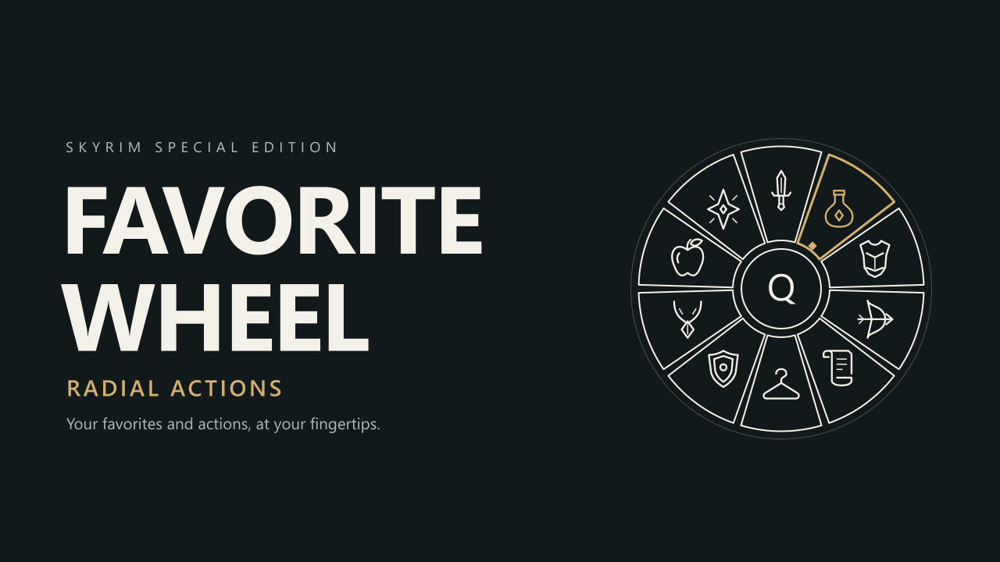

Replace Skyrim's Favorites menu with a categorized wheel for favorites or your full inventory. Access outfits and optional Face Lighting through a separate action wheel, with configurable time behavior, controller support, themes, and localization.
Favorite Wheel - Radial Actions
Your favorites and actions, at your fingertips.
A categorized favorites wheel and a separate home for quick actions.
Version 0.5.0
Replace Skyrim's Favorites menu with a radial interface with keyboard, mouse, and controller controls. Browse your favorite items and spells by category, check useful item information, and use a separate action wheel to change outfits or control optional Face Lighting features. Favorites and actions have their own pages, giving additional functions room to grow without crowding your item list.
Your favorites. Your actions.
- Categorized favorites — Weapons, equipment, potions, food, spells, shouts, powers, and other items. Each page holds ten entries, with extra pages for larger collections. The wheel uses the favorites you already mark in your inventory and magic menus.
- Optional full inventory — Choose All inventory under Settings / Gameplay / Item source. Favorites only remains the default. Pages contain ten entries and hover details are read on demand.
- Time behavior — Pause (default), slow time with an adjustable relative speed, or normal speed. Settings and outfit dialogs always pause.
- Native quick slots — Hover a favorite and press 1–8 to assign or clear its gameplay shortcut. The wheel displays existing and newly assigned slot numbers.
- Flexible controls — Keyboard, mouse, and controller support, with configurable opening keys and independent favorites/actions modifiers.
- A separate action wheel — Switch between favorites and functions inside the wheel, or open the action wheel directly. Outfit presets and optional Face Lighting controls occupy separate categories.
- Useful item details — Inspect available damage, armor, weight, value, spell cost, and effect or enchantment information while hovering an entry. Information depends on the item type and available game records.
- Outfit presets — Save your currently worn armor, clothing, and jewelry, then select a preset to change outfits. Rename, overwrite, delete, import, or export presets from the wheel.
- Optional Face Lighting controls — Toggle player lighting, control the NPC targeted before opening the wheel, and manage follower lighting through a compatible Face Lighting SKSE installation.
- A customizable interface — Original line icons, a compact category ribbon, diamond page indicators, hover details, and staggered fan-style opening and closing animations. Adjust wheel size, position, background dimming, sounds, and animations.
- Built-in settings — Configure the wheel in-game without SKSE Menu Framework. Automatically follows your Windows display language, with English fallback and manual language selection. Includes English and Simplified Chinese, four themes, and editable language and theme files.
- Remembered categories — Favorites and actions independently remember their last category during the current game session. Changing categories keeps the wheel cursor in place.
The action wheel is intended to accommodate additional functions as development continues. The current release includes outfit presets and the optional Face Lighting integration described below.
Spells, Shouts, and Powers are separate top-level categories, navigated with the same A/D or LB/RB controls. Powers includes active greater, lesser, and voice powers. Passive abilities and internal effects are excluded. Physical scrolls remain under Other. Magic entries remain favorites only even in All inventory mode; selecting equips them for normal casting or activation.
Keyboard & mouse
These are the default controls. The Favorites shortcut follows your game's binding unless overridden in the wheel settings.
- Q — Open or close the favorites wheel.
- Shift + Q — Open the action wheel directly. Both keyboard main keys and modifiers can be changed in Settings / Controls.
- R — Switch between favorites and actions while the wheel is open. Configurable in settings.
- A / D or Left / Right — Change categories.
- W / S, Up / Down, or the mouse wheel — Change pages within the current category.
- 1–8 while hovering a favorite — Assign a native quick slot; press the same number again to unbind. Entries show their assigned number. Save after changing bindings, then use the number in gameplay. 9/0 extension keys are not added as native slots.
- Mouse movement — Select an entry. The cursor stays inside the wheel; moving to the center clears the selection.
- Left click or Enter — Use an item, equip to the right hand where applicable, or execute an action.
- Right click — Equip supported weapons, spells, or scrolls to the left hand; manage an outfit preset on the outfit page.
- Esc / Tab — Close the wheel. In the follower list, return to the Face Lighting page.
- F2 — Open the built-in settings while the wheel is open.
Opening the wheel pauses the game by default. Under F2 / Gameplay / Time behavior, choose Slow time or Normal speed and Apply. Optional slow time defaults to 20%, adjustable from 5–100% of the existing game speed. Settings and outfit dialogs pause in all modes. The world continues running in live modes and you can still take damage; UI animations retain real-time timing. Detected external multiplier changes close the wheel without overwriting that source. A successful item or action selection closes it, then executes after gameplay resumes. Opening and closing animations are visual transitions and do not delay the actual action. Selecting a spell or shout equips it; cast or shout using the normal game controls.
In live modes, a movement direction held before opening is retained until you release it. New movement-key presses inside the wheel only operate the UI; keys still held when both wheel menus close resume movement immediately. Gameplay movement remaps are respected. The left stick retains its opening movement vector until centered while aiming the wheel. Attack clicks and opening keys retain their release protection.
Selecting an already equipped weapon in the corresponding hand, or an equipped armor item, unequips it.
Controller
Uses your game's controller Favorites binding (normally D-Pad Up); LB + Favorites opens actions. Left stick selects; A uses/right hand; X equips left hand or manages a preset; LB/RB change categories; D-Pad Up/Down change pages; Y switches wheels; B closes/returns; Start opens settings. Controller main key and modifiers are configurable. In settings/dialogs the left stick moves the pointer and A clicks; preset names need keyboard/IME input. With the default game bindings, D-Pad Down still opens the original Favorites menu while the wheel is closed.
D-Pad Up/Down turns one page per physical press while the wheel is open. Release the opening button before using it to page; holding it does not also navigate. A category needs more than ten entries to have multiple pages. Held buttons do not repeat pages.
While the wheel is open, captured buttons are reserved for its controls. RB changes categories without activating the equipped shout or power, including Horde’s management ability. Outside the wheel, normal gameplay controls remain available.
Outfit presets
Wear the equipment you want to save, open the action wheel with Shift + Q, and choose SAVE CURRENT on the outfit page. Enter a name and confirm.
Left-click a preset to remove your currently worn managed equipment and then equip the saved outfit. If your current managed equipment exactly matches the preset, selecting it again removes that outfit instead.
The equipped badge appears whenever all saved outfit instances are worn, including manually equipped items. Extra apparel does not suppress the badge. Selecting an outfit still follows the rules above: an exact set is removed; extra managed apparel triggers replacement with the preset.
Weapons, shields, and ammunition are excluded. Presets manage armor, clothing, jewelry, and other non-shield armor items in your own inventory. Items do not need to be favorited. Presets do not create equipment or retrieve it from followers or containers.
Right-click a preset to rename it, replace it with your current outfit, delete it, or export it. Overwrite and delete require confirmation. Deleting a preset does not delete its items.
Save the game after editing presets. Presets are stored per character in the SKSE co-save. Loading an older save restores the presets from that save. Keep the matching .skse co-save when transferring saved games.
Exported .fwo files are written to Data/SKSE/Plugins/FavoriteWheel/Outfits/Exports/. Place files in Data/SKSE/Plugins/FavoriteWheel/Outfits/Imports/ and select IMPORT OUTFITS to import them. With Mod Organizer 2, new files may appear in Overwrite or your configured output mod.
Importing requires matching equipment in the destination character's inventory. It does not copy items. Presets containing dynamic forms or player-created dynamic enchantments cannot currently be exported. These files are specific to Favorite Wheel and are not Outfit Wheeler files.
Outfits support up to 64 worn pieces. Copies without a unique instance ID are interchangeable only when all saved signature fields match, including tempering, enchantment, and custom name. Unique IDs still require exact identity; duplicate IDs are rejected. A new preset is checked before saving. An unavailable preset's detail card identifies the first failing piece and reason, with comparison details in FavoriteWheel.log.
Missing or ambiguous equipment prevents a change from starting. Improving, enchanting, or renaming saved items may require overwriting the preset. Protected quest equipment and shield-slot conflicts are checked. Equipment changes run in steps; another mod can block or alter a step, leaving a partial outfit change. The wheel reports incomplete changes rather than forcing restricted equipment off.
Optional integrations
Face Lighting SKSE
Requires a build providing a compatible public API V1. Compatibility is based on that interface, rather than an exact mod release number.
The Face Lighting category appears only when a compatible interface is detected. Without Face Lighting, the category is hidden and favorites and outfits remain available. A detected interface that is temporarily not ready retains its category with a status message.
Aim at an NPC before opening the wheel to use the targeted-actor control. Follower lighting includes a group switch and an individual follower list. An enabled preference does not guarantee visible light: the lighting mod's perspective, sneaking, dialogue, and environment rules still apply. Detailed lighting configuration remains in Face Lighting's own settings.
Skyrim Text Bridge
Compatible versions can provide IME input when naming presets. Use the input-method shortcut configured in Text Bridge. Without it, normal keyboard input and Unicode clipboard paste remain available. Neither integration is required for the core wheel.
Get started
Install with your mod manager, enable the mod, and launch through SKSE. No ESP, Papyrus scripts, or SWF files are required.
Required
- SKSE64, matching your installed game version.
- Address Library for SKSE Plugins, matching your installed game version.
- Microsoft Visual C++ 2015–2022 x64 Redistributable.
Mark items and spells as favorites in your usual inventory or magic menu, return to gameplay, and press Q. By default, the wheel lists only favorites. Choose F2 → Gameplay → Item source → All inventory → Apply to show carried inventory without marking everything as a favorite. Spells, shouts, and active powers remain favorites only; native 1–8 assignment requires a favorite. Books, ingredients, miscellaneous items, and poisons can be listed but cannot be directly used by this version.
Open the wheel and press F2 (controller: Start) to configure it. Appearance, Controls, and Gameplay have separate tabs. Configure favorites/actions opening keys and Shift/Ctrl/Alt modifiers independently; old configurations retain Q/Shift+Q. Chords match modifiers exactly. Changes preview in-game; APPLY saves them and returns to the wheel, while canceling discards unsaved changes. You can also edit Data/SKSE/Plugins/FavoriteWheel.ini and restart the game. Set Enabled=0 to restore the original Favorites menu.
Keep your existing INI and custom language/theme files when upgrading. Mod Organizer users should also check Overwrite for settings written by the game. The supplied configuration uses Language=auto to follow your Windows display language, falling back to English if no translation matches. Choose System in settings to use automatic selection, or select a language manually. Existing manual choices are preserved when upgrading.
Compatibility
- Skyrim SE 1.5.97 — Tested in-game.
- Skyrim AE 1.6.640 — Supported; in-game testing pending. Use matching SKSE64 and the AE Address Library for 1.6.640.
- Skyrim AE 1.6.1170 — Tested in-game.
- Skyrim 1.7.x — Supported, but not yet tested in-game. This build specifically supports 1.7.99 and 1.7.104; support does not automatically extend to every future 1.7.x update. Use the matching SKSE64 and Address Library, including the version-5 address database for these runtimes.
Other runtimes are not supported by this build. Skyrim VR is not supported. Testing on the versions above does not certify every third-party mod combination.
SkyUI is not required. Entries come from the player's inventory and favorites data. Disable overlapping Favorites-menu replacement features in other mods when using this wheel.
Ultimate Animated Potions NG and Eating Animations and Sounds SE worked in user testing. Consumables use the game's equipment path so those mods can receive their normal triggers. This is not a guarantee for every animation-mod setup.
Item details are practical information from game records and supported calculations, rather than a complete copy of the vanilla or SkyUI description card. Trading prices, conditional/scripted effects, and special mod-specific corrections may differ. Poison application is not implemented; use poisons through the inventory instead. Beast-form controls return to the original Favorites menu.
The full-inventory directory is collected once per opening. Page snapshots carry at most ten entries; details are read after stable hover and cached for that opening. Initial scanning/sorting and new font glyphs still have a cost with large inventories. Full inventory received positive user testing with a large inventory.
Themes & translations
Includes Classic Gold, Frost, Engraved Gold, and Quiet Slate, plus English and Simplified Chinese. Select them in the built-in settings. System mode detects the Windows display language, independently of the game's language or your current input method.
To create a translation, copy SKSE/Plugins/FavoriteWheel/Languages/en.ini to a locale filename such as fr.ini or pt-BR.ini, keep the keys unchanged, and translate their values. Set Name to the language's display name and save as UTF-8. Missing or empty text falls back to English; item and spell names continue to come from the game. No recompilation required.
Restart after adding a file. Automatic selection tries the full locale first, then a generic language file, then English. For example, Windows fr-FR can use fr.ini. Share only your language file under its original folder structure, without the DLL or main configuration.
To make a theme, copy an existing file in SKSE/Plugins/FavoriteWheel/Themes/ to a new filename. Themes support colors, font settings, ornament and relief strength, line widths, and local transition settings. Restart after adding files, then select them in settings. Use a font that supports your language. Theme image replacement and arbitrary layouts are not included.
Open source & permissions
Favorite Wheel's own code is distributed under GPL-3.0. Modification and redistribution are permitted under the terms of that license. The matching source archive accompanies the release; retain applicable copyright and license notices. Third-party components keep their own licenses and notices.
The software is provided without any warranty, including implied warranties of merchantability or fitness for a particular purpose.
Feedback & credits
When reporting an issue, include your Skyrim and SKSE versions, the mod version, reproduction steps, relevant integrations or UI/animation mods, and FavoriteWheel.log. The log is in your game's Documents folder under My Games/Skyrim Special Edition/SKSE/. Add a crash log for crashes.
Thanks to the SKSE, CommonLibSSE-NG, Address Library, Dear ImGui, spdlog, and Microsoft DirectX library contributors. Thanks to the testers helping validate the wheel across game versions.
Developed with AI assistance and refined through hands-on testing. The cover is original vector promotional artwork, not an in-game screenshot.